통신설비기능장 (2003-07-02 기출문제)
1과목: 임의 과목 구분(20문항)
1. ITU-T에서 규정한 음성회선에 대한 평가 잡음은 몇 [Hz]를 기준으로 하는가?
- 1000
- 1500
- 2500
- 3600
(정답률: 70%)

2. 지하의 인공(Man Hole) 내에 출입시 산소(O2) 부족으로 출입이 금지되고 있는 최저의 산소량은 몇 [%] 이하부터인가?
- 19
- 17
- 15
- 12
(정답률: 71%)
3. 맥스웰 브리지로 장하코일의 장하량을 측정하였던 바 R1=24[Ω], R3=36[Ω], Ls=60[mH]에서 수화기에 흐르는 전류가 0이 되었다. 측정된 장하량은 몇 [mH]인가?
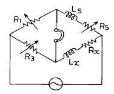
- 100
- 90
- 80
- 70
(정답률: 62%)
4. 오실로스코프의 X축에 2[kHz], Y축에 3[kHz]의 교류전압을 동시에 인가하였던바 그림과 같은 도형이 나타났다. 이 2개 전압의 위상차는 몇 도인가?
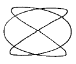
- 0°
- 60°
- 90°
- 120°
(정답률: 81%)
5. 오실로스코프의 휘도(intensity)의 조정은 무엇으로 하는가?
- 브라운관의 제어그리드 전압조정
- 브라운관의 수평편향판 전압조정
- 브라운관의 필라멘트 전압조정
- 브라운관의 애노드 전압조정
(정답률: 78%)
6. 그림의 회로에서 각 부품의 양단전압을 체크했을 때 가장 높은 전압이 나타나는 것은?
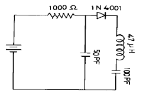
- 1000[Ω]
- 100[pF]
- 50[pF]
- 47[μH]
(정답률: 75%)
7. 공진회로의 VC를 가변하면서 fo에 공진시키고자 한다. 공진시 전압계와 전류계의 지시치는 어떠한가?
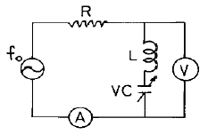
- V : 최대, A : 최대
- V : 최대, A : 최소
- V : 최소, A : 최대
- V : 최소, A : 최소
(정답률: 65%)
8. 열전대형 계기는 어떤 원리를 이용한 것인가?
- 브리지(bridge) 원리
- 제어백(zeaback) 효과
- 전자유도법칙
- 파라데이(Faraday)의 법칙
(정답률: 59%)
9. 그림에서 직류전류계 A1의 지시치가 30[mA]이고, A2의 지시치는 20[mA]이다. 저항 R의 값이 4[Ω]일 때 전류계 A2의 내부저항 Rm은 몇 [Ω]인가?
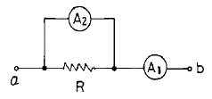
- 2
- 4
- 6
- 8
(정답률: 64%)
10. 광섬유 케이블의 관로포설속도는 분당 몇 미터[m/분] 이내로 하여야 하는가?
- 1
- 3
- 10
- 20
(정답률: 68%)
11. 광섬유 케이블의 재생중계기의 전원은 케이블의 무엇에 의하여 급전되는가?
- 광심선의 코어와 클래드에 의하여
- 케이블의 외피와 인장선에 의하여
- 케이블의 외피와 접지에 의하여
- 케이블내의 개재페어에 의하여
(정답률: 54%)
12. 높은 주파수를 사용하는 전화 케이블에서 전기저항을 점차 증가시킬 때 통화전류의 전파속도는 어떻게 변화하는가?
- 일정하다.
- 점차 느려진다.
- 점차 빨라진다.
- 경우에 따라 달라진다.
(정답률: 76%)
13. 차도를 횡단하여 가공으로 강연선 또는 케이블을 가설할 때의 안전수칙에 의한 작업방법 중 맞는 것은?
- 통행차량을 정지시키고 가설한다.
- 차량통행이 한가한 틈을 이용하여 신속히 가설한다.
- 철선 고리가 있는 보조선을 이용한다.
- 도로의 중앙과 양측에 인원을 배치하여 장대로 받쳐주고 가설한다.
(정답률: 62%)
14. 전주 운반시 준수하여야 하는 사항으로 부적합한 것은?
- 운반작업조를 편성하고 조장을 지정한다.
- 작업자는 간편한 복장과 안전모를 착용한다.
- 조장은 조원의 연령, 체력, 신장 등을 고려치 않고 편리한 대로 배치한다.
- 작업은 조장의 구령 또는 신호에 따라 실시한다.
(정답률: 84%)
15. 동축 케이블의 감쇠특성은 주파수와 대체로 어떤 관계가 있는가?
- 주파수의 평방근에 반비례
- 주파수의 평방근에 비례
- 주파수에 비례
- 주파수의 자승에 비례
(정답률: 52%)
16. 특성이 틀린 2개의 균일한 선로를 접속한 복합선로에서 종단이 단락될 때 전압반사계수 m은?
- -1
- -0.5
- 0.5
- 1
(정답률: 65%)
17. 도월지선은 수평지선과 추지선으로 이루어진다. 이때 추지선의 표준 근개 각도는 몇 도인가?
- 15°
- 30°
- 45°
- 60°
(정답률: 44%)
18. 광섬유 케이블의 개구수 NA는 코어의 굴절률을 n1, 클래드의 굴절률을 n2라고 할 때 어떤 식으로 나타내는가?
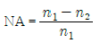
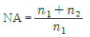
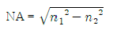
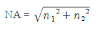
(정답률: 68%)
19. 다음 중 우리나라에서 사용하고 있는 시내 케이블의 심선경이 아닌 것은?
- 0.2[mm]
- 0.4[mm]
- 0.65[mm]
- 0.9[mm]
(정답률: 66%)
20. 다음 시내 케이블의 배선법 중 씨.씨.피(C.C.P) 케이블에 적용되는 배선법은?
- 고정 배선법
- 중복 배선법
- 자유 배선법
- 절체반 배선법
(정답률: 50%)
2과목: 임의 과목 구분(20문항)
21. DATA 통신 System을 이용하려는 기설 전화 회선망의 회선 평형도는 1000[Hz]로 측정해서 얼마 이상 되어야 하는가?
- 31[dB]
- 46[dB]
- 53[dB]
- 68[dB]
(정답률: 50%)
22. 병렬공진회로의 실체이다. 코일의 길이 L을 L'로 약간 잡아 늘였을 경우 공진주파수는 어떻게 되는가?
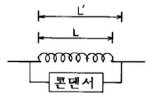
- 낮아진다.
- 높아진다.
- 변화없다.
- 0으로 된다.
(정답률: 52%)
23. 그림의 바이어스 회로에서 TR의 열안정을 위하여 사용하는 저항으로써 가장 역할이 큰 것은?
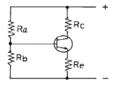
- Ra
- Rb
- Rc
- Re
(정답률: 57%)
24. 임펄스 계전기의 복구시간이 길어지면 메이크비는?
- 감소된다.
- 증가된다.
- 전혀 불변이다.
- 증가와 감소가 반복된다.
(정답률: 58%)
25. 그림의 드레인 궤환 바이어스 회로에서 VGS=8.5[V]일 때 드레인 전류 ID를 계산하면 얼마인가?
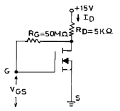
- 0.33[mA]
- 1.3[mA]
- 1.69[mA]
- 2.86[mA]
(정답률: 55%)
26. 전력 증폭기 중에서 크로스 오버 찌그러짐 (Cross-Over-Distortion)을 발생시키는 것은?
- A급 전력 증폭기
- AB급 전력 증폭기
- B급 푸시풀 전력 증폭기
- C급 전력 증폭기
(정답률: 51%)
27. 원단누화란?
- 송단측에서 송단측으로 들려오는 누화
- 송단측에서 수단측으로 들려오는 누화
- 수단측에서 송단측으로 들려오는 누화
- 수단측에서 수단측으로 들려오는 누화
(정답률: 67%)
28. 어느 전화국의 최번시 국간중계선 통화량 측정결과, 전 중계선 8회선이 6[Erl]의 호량을 운반하였다. 이때 국간중계선의 사용능률은 몇[%]인가?(오류 신고가 접수된 문제입니다. 반드시 정답과 해설을 확인하시기 바랍니다.)
- 60
- 70
- 75
- 80
(정답률: 25%)
29. SSB 방식에 대한 설명으로 옳지 않은 것은? (단, DSB와 비교)
- 평형 변조기로 출력측의 반송파를 제거한다.
- 주파수 대역폭이 작다.
- 필터로 상측파대와 하측파대를 통과시킨다.
- 다단변조방식을 사용한다.
(정답률: 42%)
30. 진폭변조(AM) 방식에 비해 주파수변조(FM) 방식의 특징으로 맞지 않는 것은?
- 신호대 잡음비가 개선된다.
- 피변조파의 점유주파수대역폭이 좁아진다.
- 수신기의 충실도를 향상시킬 수 있다.
- 초단파대의 변조에 적합하다.
(정답률: 62%)
31. 반도체 집적 회로를 제조법으로 구분할 때 해당되지 않는 것은?
- 모노리틱 집적회로
- 혼성 집적회로
- 대규모 집적회로
- 박막 집적회로
(정답률: 67%)
32. FET에서 정수 gm은 다음 중 어느 것인가?
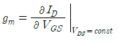
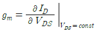
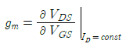
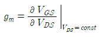
(정답률: 54%)
33. 다음 2진수를 10진수로 환산한 것은?
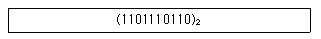
- (886)10
- (688)10
- (256)10
- (988)10
(정답률: 64%)
34. 일반적으로 PCM 방식에서 사용하는 표본화주파수는?
- 2[kHz]
- 4[kHz]
- 6[kHz]
- 8[kHz]
(정답률: 59%)
35. 모사 전신과 사진 전신의 장치에 있어서 다른 점은 무엇인가?
- 주사 방법과 기록 방법
- 전송 속도와 광전 변화
- 전신 전류와 수신 속도
- 모든 것이 근본적으로 다르다.
(정답률: 40%)
36. 전화선을 이용하여 CRT와 같은 터미널에 뉴스, 일기, 스포츠, 주식시세, 의료 정보 등 필요한 정보를 받아보고 그 대가를 지불하는 서비스는?
- 비디오텍스(videotex)
- 텔레텍스트(teletext)
- 워드프로세서(word processor)
- 화상회의(teleconference)
(정답률: 67%)
37. 다음 장치들 중에서 데이터 통신 시스템의 단말장치에 해당되는 것은?
- 논리 장치
- 주기억 장치
- 입출력 장치
- 채널 장치
(정답률: 17%)
38. 팩시밀리(Facsimile)에 해당 되지 않는 것은?
- 문자를 주사수단에 의해서 전송하는 방식
- 도형을 주사수단에 의해서 전송하는 방식
- 사진을 주사수단에 의해서 전송하는 방식
- 음성을 주사수단에 의해서 전송하는 방식
(정답률: 87%)
39. 계수형 전자계산기 (Digital computer)의 구성 부분 중 중앙처리장치와 관계가 적은 것은?
- 제어장치
- 입출력장치
- 연산장치
- 주기억장치
(정답률: 55%)
40. 전치왜곡회로(pre-distorter)를 사용하지 않는 송신기는?
- 벡터(vector) 합성법에 의한 송신기
- 리액턴스(reactance)관 송신기
- 세라소이드(serrasoid) 송신기
- 암스트롱(armstrong) 송신기
(정답률: 54%)
3과목: 임의 과목 구분(20문항)
41. 전파의 페이딩 방지책이 아닌 것은?
- 공간 또는 주파수 다이버시티 사용
- 수신기에 AVC 설치
- 서로 수직으로 놓인 공중선을 합성으로 사용
- 송신주파수 안정
(정답률: 59%)
42. 정현파신호로 진폭변조한 파를 오실로스코프로 측정한 결과 그 최대진폭이 45[V]이고 최소진폭이 5[V]이었다. 변조도는 얼마인가?
- 0.6
- 0.7
- 0.8
- 0.9
(정답률: 74%)
43. 현재 우리나라의 TV 방송 방식과 주파수 대역폭은 얼마로 하고 있는가?
- NTSC, 6[MHz]
- PAL, 8[MHz]
- SECAM, 10[MHz]
- BW, 12[MHz]
(정답률: 64%)
44. 주파수분할다중방식(FDM)의 전송기기에 필요하지 않은 부분은 어느 것인가?
- 링(Ring) 변조기
- A/D 컨버터
- 대역통과필터
- 국부발진기
(정답률: 58%)
45. 스퀄치 회로에 관한 설명으로 옳지 않은 것은?
- 고주파입력이 없을 때 발생하는 잡음을 제거하는 회로이다.
- FM 수신기에서만 사용한다.
- 잡음을 증폭하고 정류하여 저주파 증폭부를 제어한다.
- 결합콘덴서의 용량을 크게하여 잡음신호를 추출한다.
(정답률: 40%)
46. 다음 변조방식 중 가장 전송속도가 빠른 것은 ?
- QAM
- QPSK
- BPSK
- FSK
(정답률: 70%)
47. 나(裸)선로에서 전송선로의 정수는 주파수 크기에 따라 표피작용, 근접작용, 와류손실 등에 의하여 1차 정수는 변화한다. 다음 설명 중 틀린 것은?
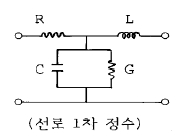
- R은 √⨍ 에 비례하여 증가
- L은 √⨍ 에 반비례하여 감소
- C는 ⨍ 에 계속 비례하여 감소
- G는 유전체 손실에 의하여 증가
(정답률: 34%)
48. 측정용 계기는 주위온도가 변하면 지시계는 오차가 발생한다. 이에 해당되는 사항이 아닌 것은?
- 기온이 변화하면 스프링과 저항선은 영향을 받으나 영구자석은 영향이 없다.
- 비투자율이 크고 부의 온도계수를 가진 자기분로판을 영구자석에 삽입하여 오차를 줄인다.
- 온도의 변화에 대하여 가장 큰 영향을 주는 것은 저항선이다.
- 스프링 재료로써 인청동을 사용하면 오차를 줄일 수도 있다.
(정답률: 51%)
49. 전화기에서의 측음의 크기는?
- 전혀 없어야 한다.
- 가급적 적을수록 좋다.
- 적당히 있어야 한다.
- 아주 클수록 유리하다.
(정답률: 59%)
50. TV 방송화면 하단에 문자 정보를 제공하는 서비스를 무엇이라 하는가?
- Videotex
- Teletext
- Fax
- Telex
(정답률: 57%)
51. 불규칙한 펄스의 관측과 한 번 밖에 일어나지 않는 과도현상을 측정할 수 있는 측정기는?
- 회로시험기
- 펄스시험기
- 마크발진기
- 싱크로스코프
(정답률: 54%)
52. 다음 중 기간통신사업자의 심사기준이 아닌 것은?
- 기술능력
- 종사원수
- 자본금
- 전기통신설비의 규모
(정답률: 57%)
53. 다음 무선설비의 기기 중 형식등록을 하여야 하는 기기는?
- 주파수공용무선전화장치
- 디지털선택호출전용수신기
- 경보자동전화장치
- 네비텍스수신기
(정답률: 50%)
54. 다음 중 데이터 교환방식의 종류가 아닌 것은?
- 회선 교환방식
- 패킷 교환방식
- 전용 교환방식
- 메시지 교환방식
(정답률: 46%)
55. 어떤 측정법으로 동일 시료를 무한 횟수 측정하였을 때 데이터의 분포의 평균치와 참값과의 차를 무엇이라 하는가?
- 신뢰성
- 정확성
- 정밀도
- 오차
(정답률: 50%)
56. 예방보전의 기능에 해당하지 않는 것은?
- 취급되어야 할 대상설비의 결정
- 정비작업에서 점검시기의 결정
- 대상설비 점검개소의 결정
- 대상설비의 외주이용도 결정
(정답률: 79%)
57. 관리 한계선을 구하는데 이항분포를 이용하여 관리선을 구하는 관리도는?
- Pn 관리도
- U 관리도
- X-R관리도
- X 관리도
(정답률: 47%)
58. 로트(Lot) 수를 가장 올바르게 정의한 것은?
- 1회 생산수량을 의미한다.
- 일정한 제조회수를 표시하는 개념이다.
- 생산목표량을 기계대수로 나눈 것이다.
- 생산목표량을 공정수로 나눈 것이다.
(정답률: 62%)
59. 다음의 데이터를 보고 편차 제곱합(S)을 구하면? (단, 소숫점 3자리까지 구하시오.)
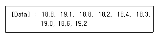
- 0.338
- 1.029
- 0.114
- 1.014
(정답률: 37%)
60. 공정 도시기호 중 공정계열의 일부를 생략할 경우에 사용되는 보조 도시기호는?
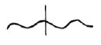
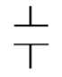
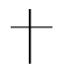
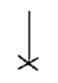
(정답률: 69%)